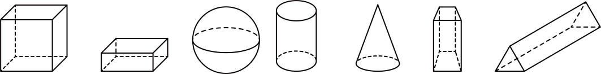
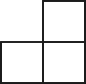
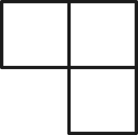
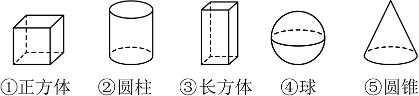
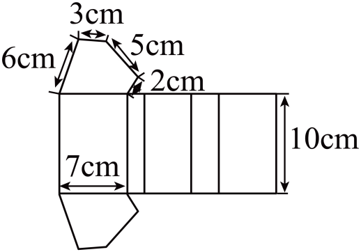
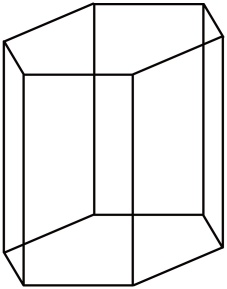
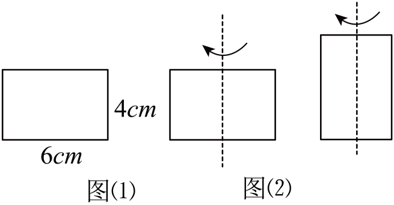
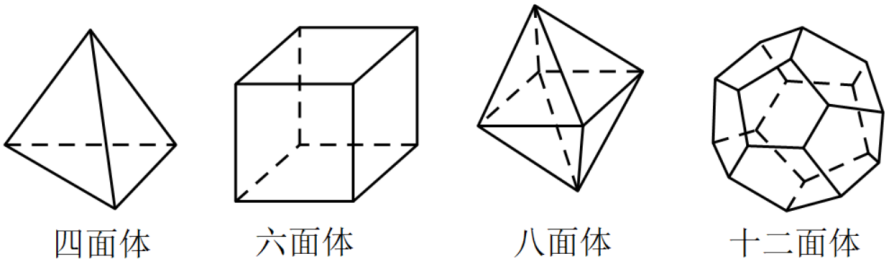

第一章 丰富的图形世界单元测试·培优卷
【北师大版2024】
考试时间：120分钟 满分：120分
姓名：___________班级：___________考号：___________
考卷信息：
本卷试题共24题，单选10题，填空6题，解答8题，满分120分，限时120分钟，本卷题型针对性较高，覆盖面广，选题有深度，可衡量学生掌握本章内容的具体情况！
第Ⅰ卷
一．选择题（共10小题，满分30分，每小题3分）
1．（3分）（24-25七年级上·广东深圳·期中）下列图形中，属于棱柱的有（ ）

A．2个 B．3个 C．4个 D．5个
2．（3分）（24-25六年级上·山东威海·期末）下列说法不正确的是（ ）
A．长方体是四棱柱；
B．八棱柱有16条棱；
C．五棱柱有7个面；
D．直棱柱的每个侧面都是长方形．
3．（3分）（24-25六年级上·山东泰安·期末）如图所示的几何体从左面看到的形状图是（ ）

A． B．
B． C．
C．

D．
4．（3分）（24-25七年级上·贵州毕节·期中）如图，用一个平面去截一个三棱柱，截面的形状不可能是（ ）

A．三角形 B．四边形 C．五边形 D．六边形
5．（3分）（24-25七年级上·四川成都·期中）在图中增加1个大小相同的正方形，使所得的新图形经过折叠能够围成一个正方体，那么有（ ）种不同的添加方法

A．2 B．3 C．4 D．5
6．（3分）（24-25七年级上·江苏苏州·专题练习）如图几何体中可以由平面图形绕某条直线旋转一周得到的是（ ）
A． B．
B．
C． D．
D．
7．（3分）（24-25七年级上·广东深圳·期中）如图所示的长方形（长为7，宽为4）硬纸板，剪掉阴影部分后，将剩余的部分沿虚线折叠，制作成底面为正方形的长方体箱子，则长方体箱子的体积为（ ）

A．22 B．5 C．7 D．11
8．（3分）（24-25六年级下·上海·开学考试）把一个长8厘米、宽6厘米、高4厘米的长方体截成两个长方体后，这两个长方体的表面积之和比原长方体增加了（ ）平方厘米．
A．96 B．48
C．64 D．以上三种都有可能
9．（3分）（2025·河南焦作·二模）如图是正方体表面展开图．将其折叠成正方体后，距顶点P最远的点是（ ）

A．点A B．点B C．点C D．点D
10．（3分）（24-25七年级上·江苏苏州·专题练习）变式1，用大小相同的小正方体搭一个几何体，从正面看和从上面看所得的图形如图所示，这样的几何体最少需要小正方体的个数为（ ）

A．5 B．6 C．7 D．8
二．填空题（共6小题，满分18分，每小题3分）
11．（3分）（24-25七年级·江苏南京·专题练习）棱柱可以分为 和 ．直棱柱的侧面是 ．
12．（3分）（24-25七年级上·河南郑州·期末）某几何体的一个截面是三角形，则这个几何体可能是 ．（写一个即可）
13．（3分）（24-25七年级上·宁夏银川·期末）银川承天寺塔（如图），始建于西夏天佑垂圣元年（公元1050年），是宁夏现存古塔中最高的一座砖塔．它是一座八角十一层楼阁式砖塔，它可以近似地看作由十一个八棱柱构成．请问：一个八棱柱一共有 角 条棱， 有 面， 有 个顶点．

14．（3分）（24-25七年级上·福建宁德·期中）“点亮青春梦想”六个字分别书写在正方体的六个面上，如图是它的一种展开图，那么在原正方体中，与“青”字所在面相对的面上的汉字是 ．
15．（3分）（24-25七年级上·江苏南京·专题练习）下列各硬纸片分别沿虚线折叠，得不到长方体纸盒的是 ．（请填写序号）
16．（3分）（24-25六年级上·山东威海·期末）如图1是边长为1的六个小正方形组成的图形，它可以围成图2的正方体，则图1中小正方形的顶点A、B在图2围成的小正方体上的距离是 ．
第Ⅱ卷
三．解答题（共8小题，满分72分）
17．（6分）（24-25七年级上·江苏无锡·单元测试）将下列几何体按名称分类：

柱体有______；
锥体有______；
球体有______．（请填写序号）
18．（6分）（24-25七年级上·江苏无锡·阶段练习）飞机表演“飞机拉线”时，我们用数学的知识可解释为点动成线.用数学知识解释下列现象：
(1)流星从空中划过留下的痕迹可解释为______；
(2)自行车的辐条运动可解释为_____；
(3)一只蚂蚁行走的路线可解释为_____；
(4)打开折扇得到扇面可解释为_____；
(5)一个圆面沿着它的一条直径旋转一周成球可解释为____.
19．（8分）（24-25六年级上·山东淄博·期中）如图所示为一个棱柱形状的食品包装盒的展开图．

(1)这个食品包装盒的几何体名称是________；
(2)根据图中所给数据，求这个食品包装盒的侧面积．
20．（8分）（24-25七年级上·江苏无锡·专题练习）我们知道，三棱柱的上、下底面都是三角形，那么正三棱柱的上、下底面都是等边三角形．如图，大正三棱柱的底面周长为10，截取一个底面周长为3的小正三棱柱．

(1)请写出截面的形状；
(2)请直接写出四边形DECB的周长．
21．（10分）（24-25七年级上·山东威海·期末）如图所示的几何体，由五个大小相同的小正方体搭成．

(1)分别画出从正面，左面和上面看到的该几何体的形状图；
(2)当去掉一个小正方体_______时，剩余部分从左面看形状没有改变（填写图中小正方体的序号）．
22．（10分）（24-25七年级上·河南郑州·期中）【问题情境】某综合实践小组计划进行废物再利用的环保小卫士活动．他们准备用废弃的宣传单制作成装垃圾的无盖纸盒．

【操作探究】
(1)若准备制作一个无盖的正方体纸盒，如图(1)，图形 经过折叠能围成一个无盖正方体纸盒．(填A，B，C，或D)
(2)如图(2)是小明的设计图，把它折成一个无盖正方体纸盒后与“保”字所在面相对的面上的文字是 ．
(3)如图(3)，有一张边长为20cm的正方形废弃宣传单，小华将其四个角各剪去一个边长为4cm小正方形后，折成无盖长方体纸盒．求这个无盖长方体纸盒的底面积和容积．
23．（12分）（24-25七年级上·山东淄博·期中）（1）如图所示的六棱柱中，它的底面边长都是4cm，侧棱长为8cm，这个棱柱共有多少个面？这个棱柱共有多少个顶点？有多少条棱？它的侧面积是多少？

（2）如图，有一个长6cm，宽4cm的长方形纸板，现要求以其一组对边中点所在直线为轴旋转180°，可按两种方案进行操作．

方案一：以较长的一组对边中点所在直线为轴旋转，如图（1）；
方案二：以较短的一组对边中点所在直线为轴旋转，如图（2）．
①上述操作能形成的几何体是__________，说明的事实是____________________；
②请通过计算说明哪种方案得到的几何体的体积大．
24．（12分）（24-25七年级上·山西晋城·期末）综合与实践
新年晚会是我们最欢乐的时候，会场上，悬挂着五彩缤纷的小装饰，其中有各种各样的立体图形．下面是常见的一些多面体：

操作探究：
(1)通过数上面图形中每个多面体的顶点数（V）、面数（F）和棱数（E），填写下表中空缺的部分：
多面体 | 顶点数（V） | 面数（F） | 棱数（E） |
四面体 | 4 | ||
六面体 | 8 | 6 | |
八面体 | 8 | 12 | |
十二面体 | 20 | 30 |
通过填表发现：顶点数（V）、面数（F）和棱数（E）之间的数量关系是 ，这就是伟大的数学家欧拉（L.Euler，1707—1783）证明的这一个关系式．我们把它称为欧拉公式；
探究应用：
(2)已知一个棱柱只有七个面，则这个棱柱是 棱柱；
(3)已知一个多面体只有8个顶点，并且过每个顶点都有3条棱，求这个多面体的面数．